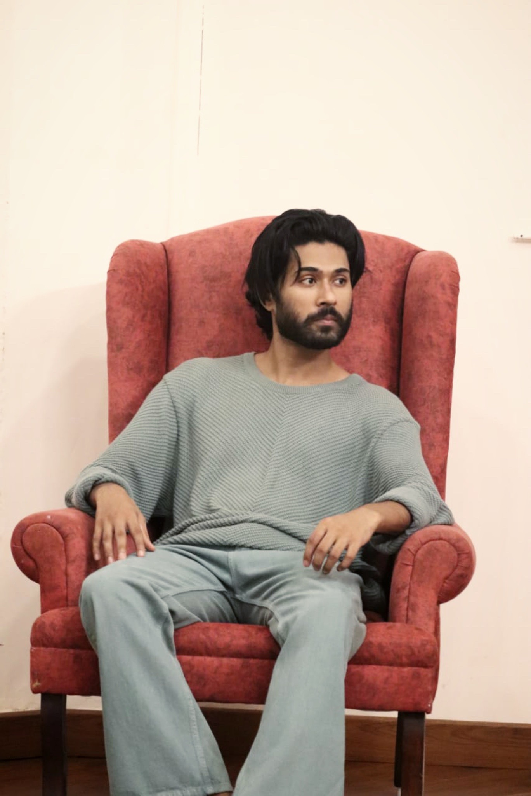

Profile Overview
Saurav Thakur is a seasoned theater practitioner withseven years of immersive experience in acting and
performance. His expertise has been shaped through
rigorous training at SRC Delhi and HCRFTR Himachal
Pradesh,where he delved deep into the nuances of
observation and human behavior, honing his craft as an actor.
Teaching Specialization:
Teaching Specialization: With a passion for education,Saurav has dedicated two years to teaching aspiring
actors, focusing on the Eric Morris technique, which
emphasizes realistic and emotionally grounded performances.
Commitment to Growth:
As both an actor and educator, Saurav remains committedto continuous growth in his craft. He is deeply invested
in guiding aspiring actors toward realizing their full
potential, helping them refine their skills and deepen
their understanding of the art form.
Performance Experience
Over the years, Saurav has brought various charactersto life on stage, performing in several acclaimed
productions, including:
- Dilli Chalo
- Dhruv Swamini
- Adhe Adhure
- Vimal Mehta II
- Andheri Nagri Chaupat Raja
- Swapnpriya
